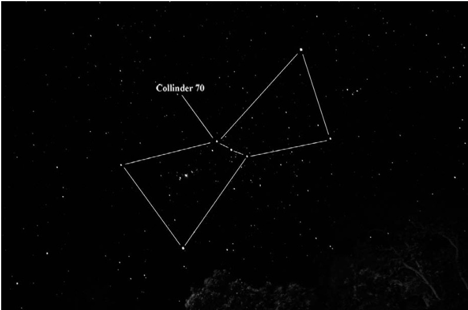

猎户座腰带 · Orion's Belt · Collinder 70

"Like those three stars of the airy Giants' zone, That glitter burnished by the frosty dark; And as the fiery Sirius alters hue, And bickers into red and emerald, shone The Princess..."
宛如那凛冽寒空中三颗巨星，在霜冻的暗夜里灼灼闪耀；又似天狼星焰光流转，忽而红艳，忽而翠碧，公主亦如此璀璨夺目。 ——阿尔弗雷德·丁尼生勋爵，1847年
童年的星空记忆 (A Childhood Memory Under the Stars)
When I was a child growing up in Cambridge, Massachusetts, it was customary to attend midnight mass on Christmas Eve. On one of those memorable evenings, my friends and I walked the quarter mile or so to Sacred Heart Church in Watertown under a star-filled sky – boots crunching in the snow, cold nipping our cheeks, comets flying from our mouths into the crisp winter air. Naked oaks lined the streets, and their long and skeletal branches formed a complex web through which I could see the brilliant stars of Orion the Hunter flashing in and out of view as we walked.
我童年时在马萨诸塞州剑桥镇长大，那时每逢平安夜参加子夜弥撒是惯例。某个难忘的夜晚，我和朋友们踩着积雪嘎吱作响，呵出的白气如彗星般划入凛冽的冬夜，在繁星满天的映照下步行约四分之一英里前往沃特敦的圣心教堂。街道两旁矗立着光秃秃的橡树，它们嶙峋的枝桠交织成网，透过其间我望见了猎户座璀璨的群星。
Orion followed us, its giant form stomping across the neighborhood rooftops keeping pace. Suddenly, the Hunter's hourglass body stood boldly before us in a clearing, his narrow waist adorned by three sparkling gems in a row, and we paused. The Belt had captured my friends' attention. Although it was just a moment as fleeting as a shooting star, we each in our own way paid homage to these stars in silent wonder before continuing on.
猎户座这位巨人踏过邻里的屋顶与我们同行，始终保持着一致的步伐。突然，在一片开阔处，猎人那沙漏般的身形赫然矗立眼前，纤细的腰间缀着一排三颗璀璨的宝石，我们不由得驻足。那条腰带攫住了同伴们的目光。尽管这瞬间如流星般转瞬即逝，我们仍以各自的方式向这些星辰默默致敬，怀着无声的惊叹，而后继续前行。
天际的磁石 (A Celestial Magnet)
There isn't a time-honored stargazer who hasn't looked up on crisp winter evenings and marveled at Orion's Belt. This splendid row of three 2nd-magnitude stars, stretching 3° across the velvet night like a string of pearls, culminates in late January (meaning it stands highest above the southern horizon after sunset) and forms the most significant asterism in the winter night sky next to the Big Dipper.
没有哪位经验丰富的观星者，会在清冽的冬夜抬头仰望时不对猎户座的腰带发出赞叹。这排由三颗二等星组成的璀璨星列，如珍珠项链般横贯3°的天鹅绒夜幕，于一月下旬达到最佳观赏位置（即日落后高悬于南方地平线之上），成为冬季夜空中仅次于北斗七星的最重要星群。
Actually, the Arabic name for the Belt's middle star, Alnilam (1.7-magnitude Epsilon ε Orionis), means "the String of Pearls." The Belt's western star, Mintaka (2.2-magnitude Delta δ Orionis) is Arabic for "the Belt" and the first to rise above the eastern horizon; early astrologers saw Mintaka's arrival as important, for it portended good fortune. The Belt's easternmost star, Alnitak (1.8-magnitude Zeta ζ Orionis), is Arabic for "the Girdle."
事实上，猎户腰带中央那颗1.7等星参宿二（ε Orionis）的阿拉伯名Alnilam意为"珍珠项链"。腰带西侧的参宿三（2.2等星δ Orionis）阿拉伯语Mintaka意为"腰带"，它是最先从东方地平线升起的星辰；古代占星家认为参宿三的出现至关重要，预示着好运降临。而腰带最东端的参宿一（1.8等星ζ Orionis）阿拉伯名Alnitak则意为"束带"。
跨越时空的文化符号 (Cultural Significance Across Millennia)
Orion's Belt is a celestial magnet, one that draws attention to itself and inspires the imagination. Different cultures throughout time have pondered these three celestial wonders and attributed significance to them. Robert Bauval and Adrian Gilbert gave great cosmic importance to the Belt stars in their 1995 book The Orion Mystery (Three Rivers Press, New York), claiming that the Pyramids of Giza are an earthly representation of the three stars as they appeared in the sky around 10,400 BCE. Alas, as Griffith Observatory director Edwin C. Krupp wrote in the February 1997 issue of Sky & Telescope, the orientation of the Belt stars and those of the pyramids simply do not match.
猎户座腰带是天际的磁石，它吸引着人们的目光并激发无限遐想。不同时代的文明都曾凝视这三颗天体奇观，并赋予其特殊意义。罗伯特·鲍瓦尔与阿德里安·吉尔伯特在1995年著作《猎户座之谜》（纽约三河出版社）中，将腰带三星与吉萨金字塔群对应为公元前10400年左右的天象投影，赋予其重大宇宙意义。然而正如格里菲斯天文台台长埃德温·克鲁普在1997年2月《天空与望远镜》杂志中指出，腰带三星与金字塔群的方位排列实则并不吻合。
Still, it's agreed that the stars of Orion were important to the ancient Egyptians who saw in them their great god Osiris, who not only presided over the life and death of his people, but also the fertile flooding of the Nile. This fact also explains the proximity of Orion (Osiris) to Eridanus (the Nile).
不过学界公认，猎户座星辰对古埃及人意义非凡——他们从中看到了主掌生死与尼罗河丰沛洪水的冥神奥西里斯。这也解释了为何猎户座（奥西里斯）与波江座（尼罗河）在星空中比邻而居。
To the Chinese of old, the Belt was a weighing beam. Early Hindus saw its stars as the three-jointed arrow that the hunter Lubddhaka (Sirius) shot into Prajapati (Alpha, Gamma, and Lambda Orionis), the father of beautiful Roh
🔒 受限于篇幅，本文仅展示部分样章。O'Meara 先生完整的观测手记、实测数据及未公开的独家配图，请参阅原著双语典藏版。
👉 立即在闲鱼获取《DEEP-SKY COMPANIONS》中英双语高清典藏版